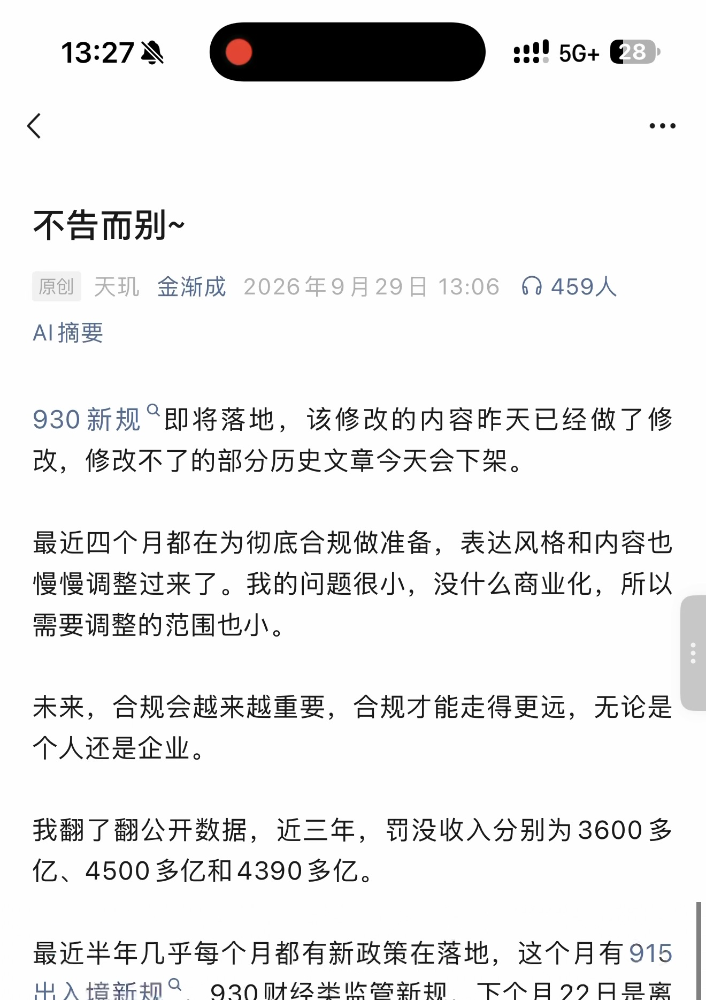
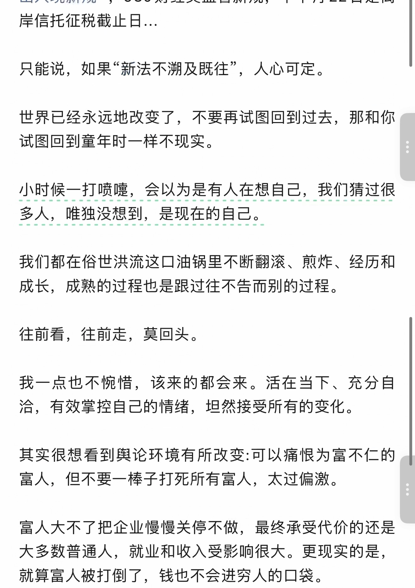
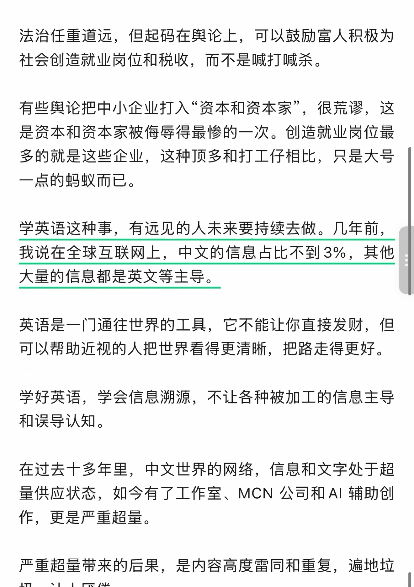
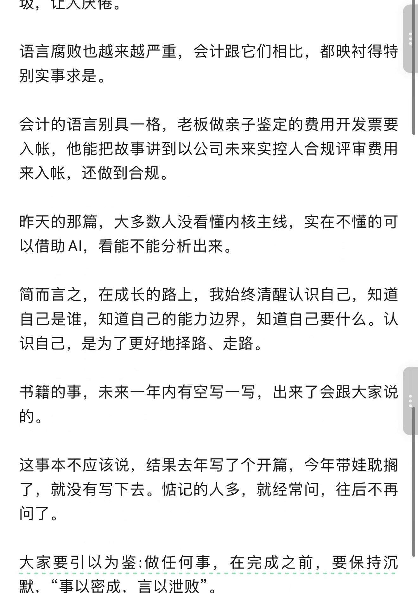
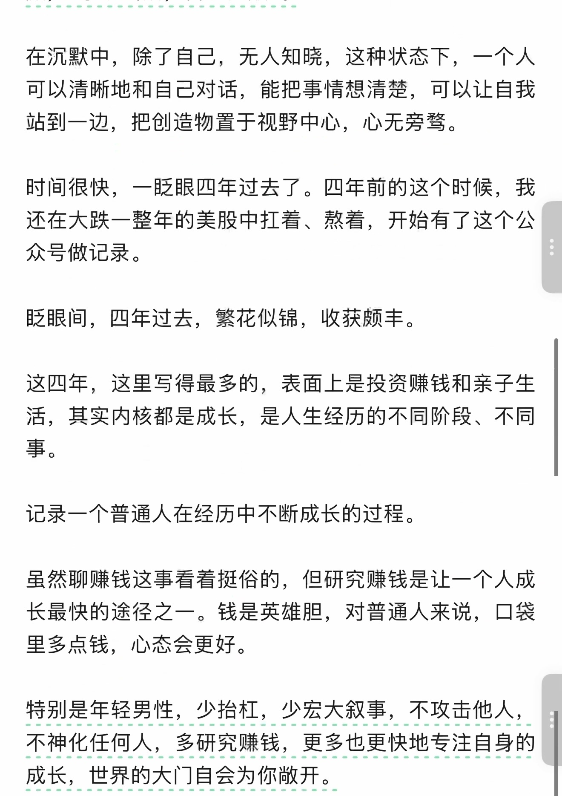
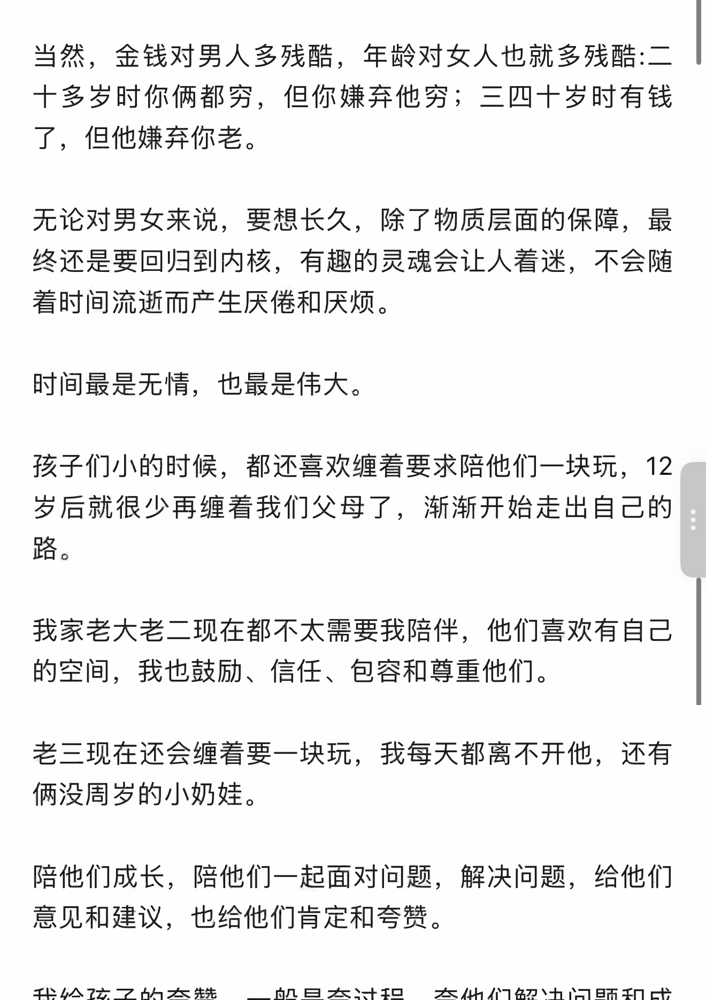
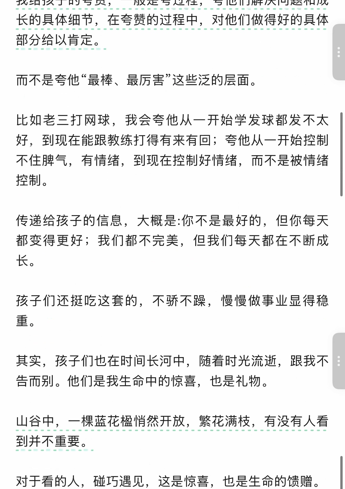
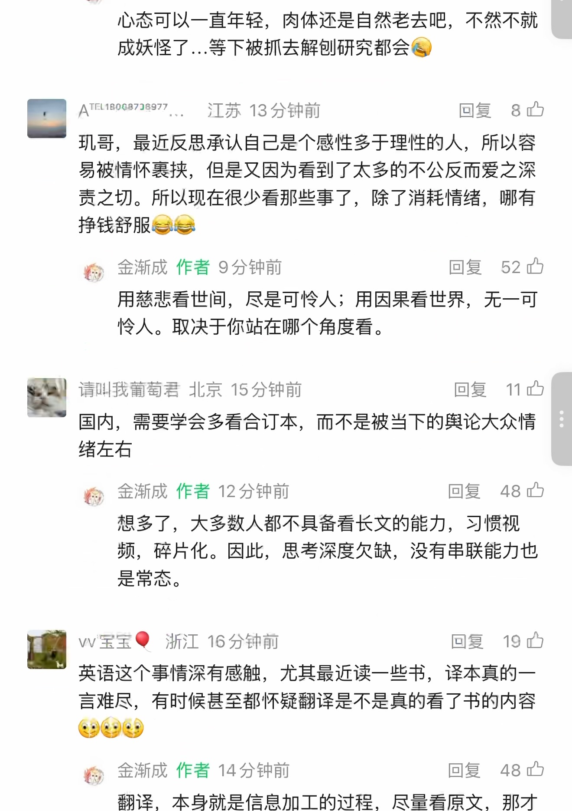
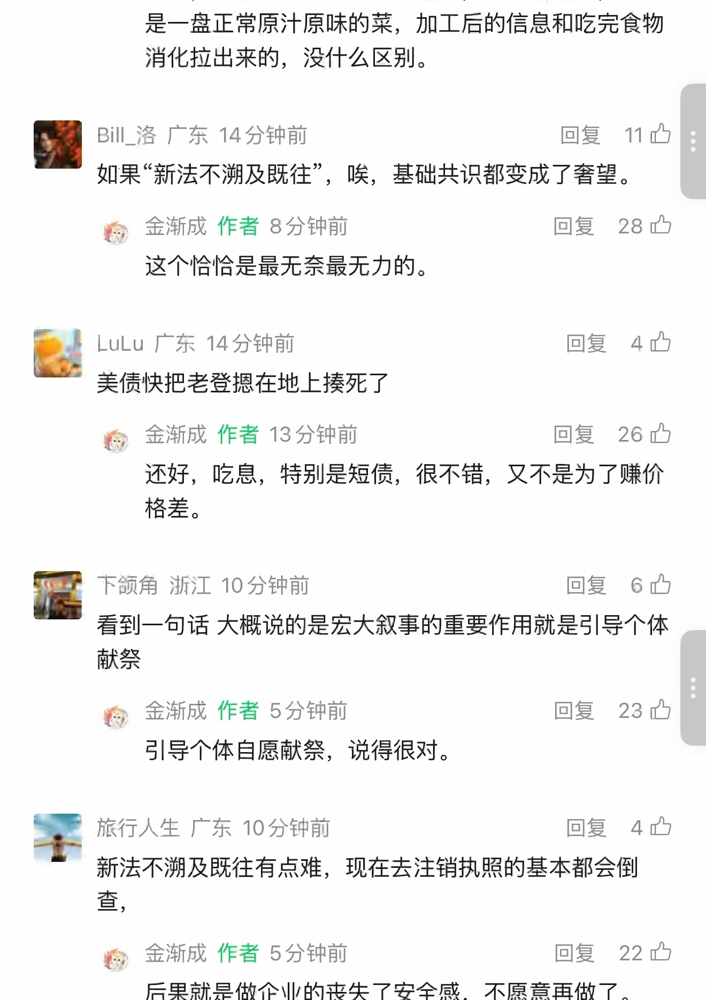
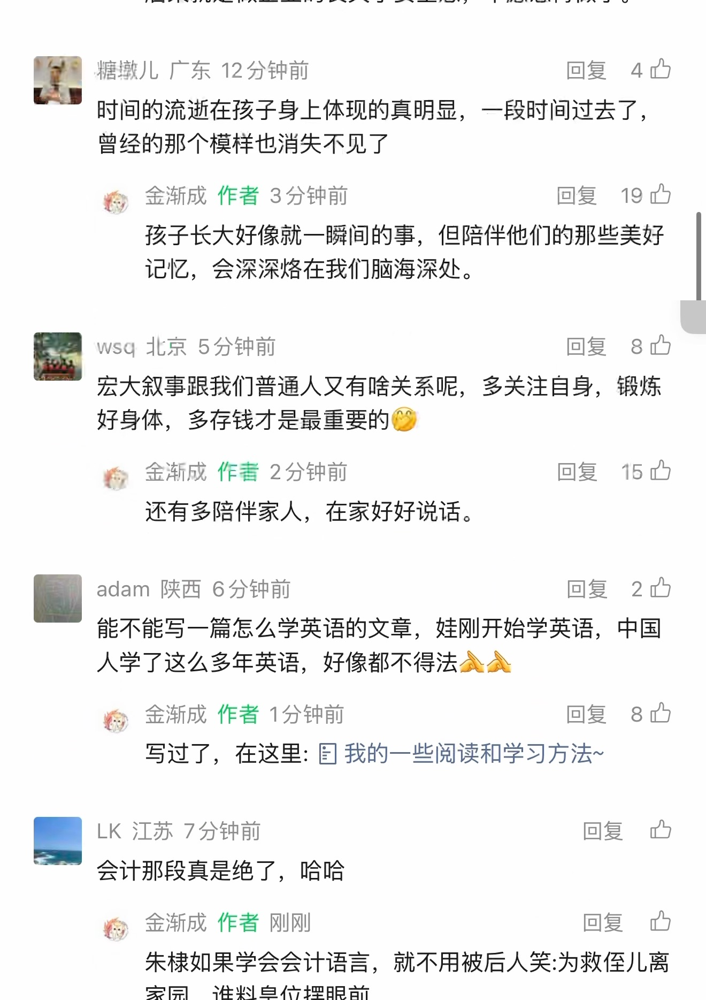

不告而别~
OCR 识别提示（待核对）
- OCR 自动识别文字，尚未逐字校对；可能错字、漏字、漏行，数字、姓名、标点及断行也可能有误，请以截图为准。
- 这里只保留 PDF 已截到的正文、留言和作者回复；截图以外的留言不在此存档中。
- 未从截图推断留言总数或回复关系；手机界面文字也可能混入 OCR。
- 低置信标记仅为机器提示，并不表示未标记的文字已经准确。
识别工具：tesseract 5.5.0 · tesseract-ocr/tessdata_best chi_sim。识别器置信度仅用于提示核对，不是文字准确率。
第 1 页 · 原始截图

查看本页自动识别文字（OCR待核对） · 14 处低置信度提示
以下为未经逐字核对的自动识别结果，请以上方原图为准。
识别器标记 14 处低置信度，请对照截图核对
这些是识别器的风险提示，并不等于已确认的错误。
- 37 人 :ee
- 原创天现金渐成 2026 年 9 月 29 日 13:06 人 459 人
- 930 新规 “ 即将落地， 该修改的内容昨天已经做了修
- 改， 修改不了的部分历史文章今天会下架。
- 最近四个月都在为彻底合规做准备， 表达风格和内容也
- 需要调整的范围也小。 上
- 我翻了翻公开数据， 近三年， 罚没收入分别为 3600 多
- 最近半年几乎每个月都有新政策在落地， 这个月有 915
- 出入境新规 “，930 财经类监管新规， 下个月 22 日是离
第 2 页 · 原始截图

查看本页自动识别文字（OCR待核对） · 19 处低置信度提示
以下为未经逐字核对的自动识别结果，请以上方原图为准。
识别器标记 19 处低置信度，请对照截图核对
这些是识别器的风险提示，并不等于已确认的错误。
- 岸信托征税截止日 …
- 只能说， 如果新法不溯及既往， 人心可定。
- 小时候一打喷呈， 会以为是有人在想自己， 我们猜过很
- 我们都在俗世洪流这口油锅里不断翻滚、 煎炸、 经历和
- 成长， 成熟的过程也是跟过往不告而别的过程。
- 我一点也不避惜， 该来的都会来。 活在当下、 充分自
- 其实很想看到与论环境有所改变 :可以痛恨为富不仁的
- 富人， 但不要一棒子打死所有富人， 太过偏激。
- 就算富人被打倒了， 钱也不会进穷人的口袋。
第 3 页 · 原始截图

查看本页自动识别文字（OCR待核对） · 26 处低置信度提示
以下为未经逐字核对的自动识别结果，请以上方原图为准。
识别器标记 26 处低置信度，请对照截图核对
这些是识别器的风险提示，并不等于已确认的错误。
- 法治任重道远， 但起码在舆论上， 可以鼓励富人积极为
- 有些和与论把中小企业打入 “资本和资本家， 很荒户， 这
- 是资本和资本家被侮导得最惨的一次。 创造就业岗位最
- 多的就是这些企业， 这种顶多和打工仔相比， 只是大号
- 一点的蚂蚁而已。
- 学英语这种事， 有远见的人未来要持续去做。 几年前，
- 我说在全球互联网上， 中文的信息占比不到 3%， 其他
- 大量的信息都是英文等主导。
- 英语是一门通往世界的工具， 它不能让你直接发财， 但
- 学好英语， 学会信息溯源， 不让各种被加工的信息主导
- 在过去十多年里， 中文世界的网络， 信息和文字处于超
- 量供应状态， 如今有了工作室、MCN 公司和 Al 辅助创
- 严重超量带来的后果， 是内容高度雷同和重复， 遍地垃
第 4 页 · 原始截图

查看本页自动识别文字（OCR待核对） · 21 处低置信度提示
以下为未经逐字核对的自动识别结果，请以上方原图为准。
识别器标记 21 处低置信度，请对照截图核对
这些是识别器的风险提示，并不等于已确认的错误。
- 圾， 让人厌倦。
- 语言腐败也越来越严重， 会计跟它们相比， 都映衬得特
- 会计的语言别具一格， 老板做亲子鉴定的费用开发票要
- 昨天的那篇， 大多数人没看懂内核主线， 实在不懂的可
- 简而言之， 在成长的路上， 我始终清醒认识自己， 知道
- 自己是谁， 知道自己的能力边春， 知道自己要什么。 认
- 这事本不应该说， 结果去年写了个开篇， 今年带娃耽摘
- 了， 就没有写下去。 居记的人多， 就经常问， 往后不再
- 大家要引以为鉴 ; 做任何事， 在完成之前， 要保持沉
- 默 , “ 事以密成， 言以污败 ”。
第 5 页 · 原始截图

查看本页自动识别文字（OCR待核对） · 22 处低置信度提示
以下为未经逐字核对的自动识别结果，请以上方原图为准。
识别器标记 22 处低置信度，请对照截图核对
这些是识别器的风险提示，并不等于已确认的错误。
- 可以清晰地和自己对话， 能把事情想清楚， 可以让自我
- 站到一边， 把创造物置于视野中心， 心无旁芍。
- 时间很快， 一皮眼四年过去了。 四年前的这个时候， 我
- 还在大跌一整年的美股中着、 歼着， 开始有了这个公
- 皮眼间， 四年过去， 繁花似锦， 收获颇丰。
- 这四年， 这里写得最多的， 表面上是投资赚钱和杀子生
- 事 9
- 记录一个普通人在经历中不断成长的过程。
- 长最快的途径之一。 钱是英雄胆， 对普通人来说， 口袋
- 特别是年轻男性， 少抬枉， 少宏大叙事， 个长而作人，
第 6 页 · 原始截图

查看本页自动识别文字（OCR待核对） · 21 处低置信度提示
以下为未经逐字核对的自动识别结果，请以上方原图为准。
识别器标记 21 处低置信度，请对照截图核对
这些是识别器的风险提示，并不等于已确认的错误。
- 十多岁时你俩都穷， 但你嫌弃他穷 ;) 三四十岁时有钱
- 了， 但他嫌弃你老。
- 无论对男女来说， 要想长入， 除了物质层面的保障， 最
- 终还是要回归到内核， 有趣的灵魂会让人着迷， 不会随
- 着时间流逝而产生厌倦和厌烦。
- 孩子们小的时候， 都还害欢缠着要求陪他们一块玩，12
- 岁后就很少再绰着我们父母了， 渐渐开始走出自己的
- 路如
- 我家老大老二现在都不太需要我陪伴， 他们喜欢有自己
- 老三现在还会缠着要一块玩， 我每天都离不开他， 还有
- 俩没周岁的小奶娃。
- 意见和建议， 也给他们肯定和夸赞。
第 7 页 · 原始截图

查看本页自动识别文字（OCR待核对） · 28 处低置信度提示
以下为未经逐字核对的自动识别结果，请以上方原图为准。
识别器标记 28 处低置信度，请对照截图核对
这些是识别器的风险提示，并不等于已确认的错误。
- 我给孩子的夸货， 一般是夸过程， 窟他们解决问题和成
- 长的具体细节， 在夸赞的过程中， 对他们做得好的具体
- 部分给以表定。 上
- 而不是夸他 “最棒、 最厉害这些泛的层面。
- 比如老三打网球， 我会夸他从一开始学发球都发不太
- 好， 到现在能跟教练打得有来有回 ; 夸他从一开始控制
- 孩子们还挺吃这套的， 不骄不踩， 慢慢做事业显得稳
- 其实， 孩子们也在时间长河中， 随着时光流送， sa
- 告而别。 他们是我生命中的惊喜， 也是礼物。
- 山谷中， 一棵蓝花极悄然开放， 繁花满枝， 有没有人看
第 8 页 · 原始截图
查看本页自动识别文字（OCR待核对） · 26 处低置信度提示
以下为未经逐字核对的自动识别结果，请以上方原图为准。
识别器标记 26 处低置信度，请对照截图核对
这些是识别器的风险提示，并不等于已确认的错误。
- 历史文章， 目录 =
- 《上一篇 .抄底亏惨了 .…
- 作者提示 : 个人观点， 仅供参考
- 疗证 2.5 万
- 写蓝言 Ca
- 人回复 ”19 办
- 助农项目优惠活动最后几天， 有需要的可以看看 : 国天技
- | 稍纵即逝 ~， 没有需求的自行忽略 ~
- 申总上海 17 分钟前回复 ”29 让
- 爱你哟机哥， 希望你能一直保持年轻保持纯真鲍
- 恰 ” 金渐成作者 15 分钟前回复 ”64 号
第 9 页 · 原始截图

查看本页自动识别文字（OCR待核对） · 67 处低置信度提示
以下为未经逐字核对的自动识别结果，请以上方原图为准。
识别器标记 67 处低置信度，请对照截图核对
这些是识别器的风险提示，并不等于已确认的错误。
- 心态可以一直年轻， 肉体还是自然老去吧， 不然不就
- 成妖怪了 .…. 等下被抓去解刨研究都会伍
- 国人和环 22 加 8 中
- 现哥， 最近反思承认自己是个感性多于理性的人， 所以容
- 易被情怀庄挟， 但是又因为看到了太多的不公反而爱之深
- 责之切。 所以现在很少看那些事了， 除了消耗情绪， 哪有
- 挣钱舒服交乱
- 营， 金渐成作者 9 分钟前回复 ”52 由
- 用枇翡看世间， 尽是可怜人 ; 用因果看世界， 无一可
- 怜人。 取决于你站在哪个角度看。
- 一请叫我葡萄君北京 15 分钟前回复 ”11 号
- 国内， 需要学会多看合订本， 而不是被当下的与论大众情
- 粕 ”人金渐成作者 12 分钟前回复 ”48 号
- 想多了， 大多数人都不具禾看长文的能力， 习惯视
- 频， 碎片化。 因此， 思考深度火缺， 没有串联能力也
- 一 vv 军宝但浙江 16 分钟前回复 ”19 办
- 英语这个事情深有感触， 尤其最近读一些书， 译本真的一
- 人人人
- 等盼半浊襄直入中区可回复 ”48 四
第 10 页 · 原始截图

查看本页自动识别文字（OCR待核对） · 55 处低置信度提示
以下为未经逐字核对的自动识别结果，请以上方原图为准。
识别器标记 55 处低置信度，请对照截图核对
这些是识别器的风险提示，并不等于已确认的错误。
- 是一盘正常原汁原味的菜， 加工后的信息和吃完食物
- 国站 -2 回复 11 办
- 如果 “ 新法不湖及既往 ”， 唉， 基础共识都变成了奢望。
- 枚 ”人金渐成作者 8 分钟前回复 28 办
- 这个恰恰是最无奈最无力的。
- 加 LuLu 广东 14 分钟前回复 4 四
- 美债快把老登扎在地上捷死了
- 烙， 金渐成作者 13 分钟前回复 26 办
- 格差。
- 中 PT 109 回复 6 四
- 献祭
- 稚， 金浙成作者 5 分钟前回复 23 办
- 引导个体自愿献祭， 说得很对。
- 闻旅行人生广东 10 分钟前回复 4 办
- 新法不溯及既往有点难， 现在去注销执照的基本都会倒
- 长， 金渐成作者 5 分钟前回复 ”22 办
- 后果就是做企业的丧失了安全感， 不愿意再做了。
第 11 页 · 原始截图

查看本页自动识别文字（OCR待核对） · 49 处低置信度提示
以下为未经逐字核对的自动识别结果，请以上方原图为准。
识别器标记 49 处低置信度，请对照截图核对
这些是识别器的风险提示，并不等于已确认的错误。
- 肝本 29 回复 4 办
- 曾经的那个模样也消失不见了
- 蕉人金渐成作者 3 分钟前回复 19 办
- 一 wsd 北京 5 分钟前回复 8 号
- 宏大叙事跟我们普通人又有啥关系呢， 多关注自身， 锻炬
- 好身体， 多存钱才是最重要的笨
- 惟人金渐成作者 2 分钟前回复市已
- 图 adam 陕西 6 分钟前回复 2 让
- 能不能写一篇怎么学英语的文章， 娃刚开始学英语， 中国
- 人学了这么多年英语， 好像都不得法全食
- 芍， 金渐成作者 1 分钟前回复 8 办
- 写过了， 在这里 : 目我的一些阅读和学习方法 ~
- 国 “ 瑟 72 回复 ”四
- 会计那段真是绝了， 哈哈
- 芍， 金渐成作者刚刚回复 ”办
- 朱棣如果学会会计语言， 就不用被后人笑 :为救侄儿离
第 12 页 · 原始截图
查看本页自动识别文字（OCR待核对） · 2 处低置信度提示
以下为未经逐字核对的自动识别结果，请以上方原图为准。
识别器标记 2 处低置信度，请对照截图核对
这些是识别器的风险提示，并不等于已确认的错误。
- * 930 新规具体内容
- 945 ”764 199 25
按日期浏览全部来源（同日按条目标识排序）
回到页首 ↑